About Cattery Viola
Our story
Cattery Viola is a recognised member of Neocat.
Cattery Viola is a recognised member of Neocat (Sociëteit van Kattenliefhebbers Neocat). This means we breed according to the association’s rules.
- Recognised pedigrees – our kittens go home with an official Neocat pedigree.
- Health & welfare – we breed according to Neocat’s breeding and welfare rules; Bella and Tiara are tested every year for HCM, PKD and FIV/FeLV.
- Supervision – as members we follow the association’s rules and oversight.
We lovingly raise British Shorthair kittens in Maastricht.
Cattery Viola has existed since May 2026.
Cattery Viola is a small, private breeder in Maastricht (Limburg), fully dedicated to the British Shorthair.
We are a small-scale, recognised hobby cattery with a professional and certified way of working, where passion for the breed comes together with professional care and love.
Why the British Shorthair
We chose this breed for its calm, loving character and its beautiful, dense coat. Precisely because we are small, we can give every kitten personal attention.
How our kittens grow up
Our kittens grow up in a loving home environment, which makes them sweet, playful, social and curious. They grow up together with our Shih Tzu Micha, so a dog is completely normal to them. They go home at around 11–12 weeks of age: dewormed, treated for fleas, recently checked by a vet, vaccinated, microchipped, litter-trained, socialised and with a pedigree.
We think it is important that every kitten ends up in the right home. That’s why we take the time to get to know you and are happy to answer all your questions.
How we work
- Pedigree – our kittens receive a pedigree via Mundikat.
- Association – we are members of Neocat.
- Health – Bella and Tiara are both tested every year for HCM, PKD and FIV/FeLV.
- Growing up – the kittens grow up in our living room, right in the middle of family life.
The parents
- Mother: Bella – Seal Silver Tipped Point; her mother is an International Champion.
- Father: Rudolph – lilac; champion at an international cat show.
Our kittens have international pedigrees with a champion line. Both parents have been tested for HCM/PKD and FIV/FeLV. See also the pedigrees.
Our queens: Bella & Tiara
Bella
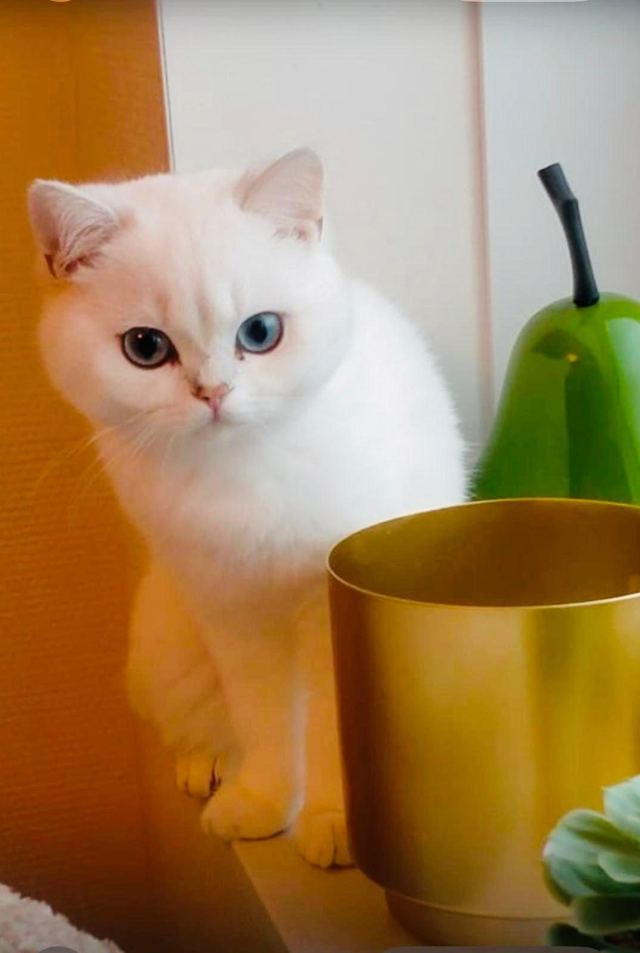
Princess Bella is a true lap cat. She wants to be part of everything, learns quickly, loves looking outside and enjoys cuddles – she starts purring in no time. Bella is caring, playful, engaged, affectionate, gentle and people-oriented, with beautiful sea-blue eyes. She is tolerant and stable and doesn’t get stressed easily by loud noises, visitors or changes. She gets along wonderfully with her bestie Tiara and Shih Tzu Micha.
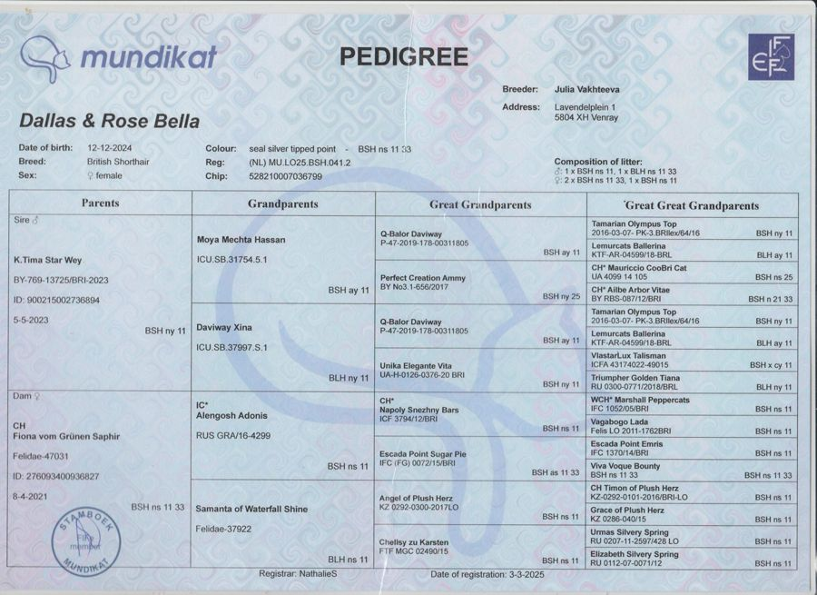
Tiara
This fiery lioness lights up every room she walks into. Her warmth draws people in, and her protective instinct knows no bounds.
Tiara is independent, self-reliant and clever – sometimes a little headstrong. She is protective, social, sweet and caring; she even supported Bella during her first birth. Tiara is playful, curious and engaged and communicates very clearly. Elegant and graceful yet energetic, with a calm presence and a fondness for naps. A high cuddle factor and a glossy coat.
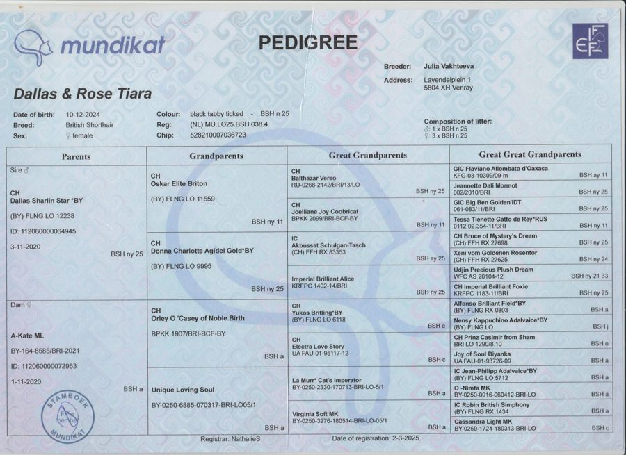
Pedigrees of the stud and the kittens will follow.
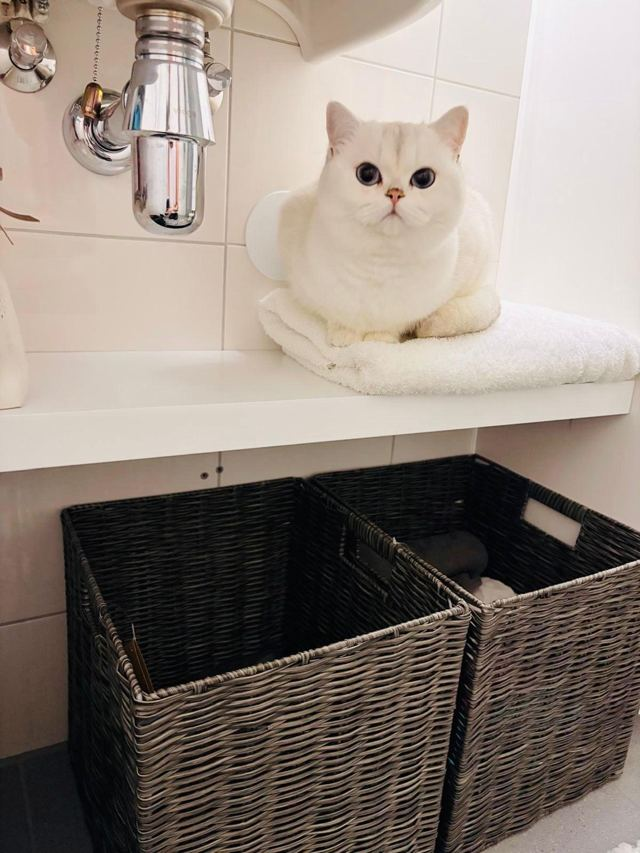
Photos from our cattery
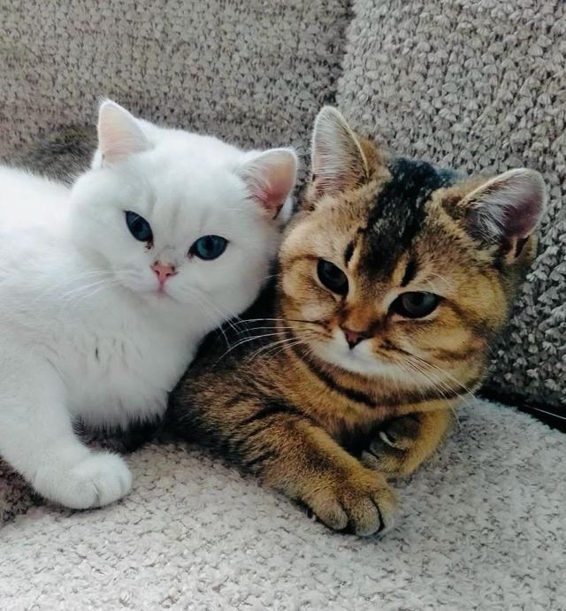
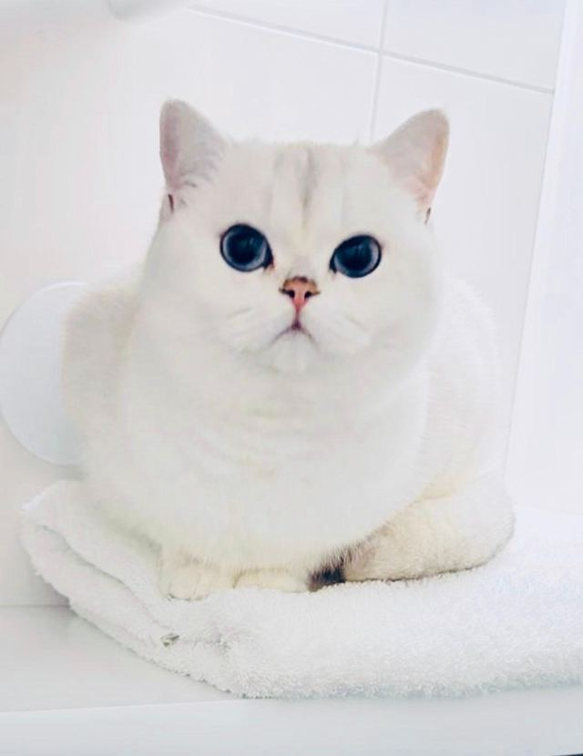
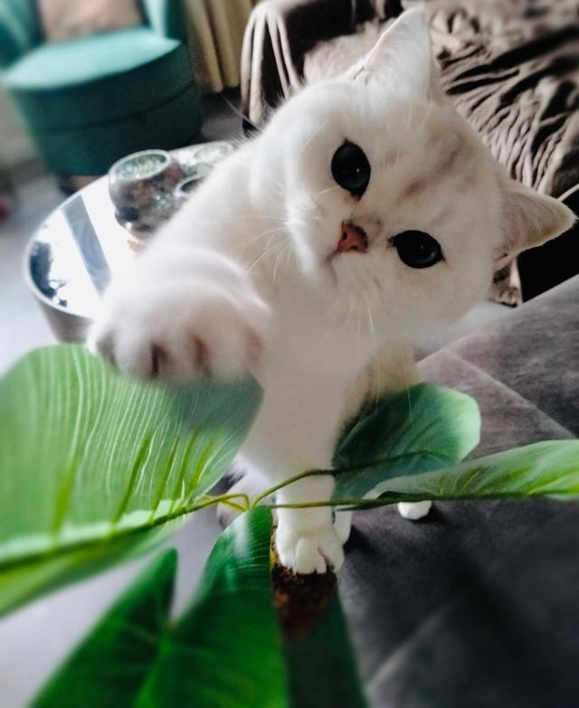
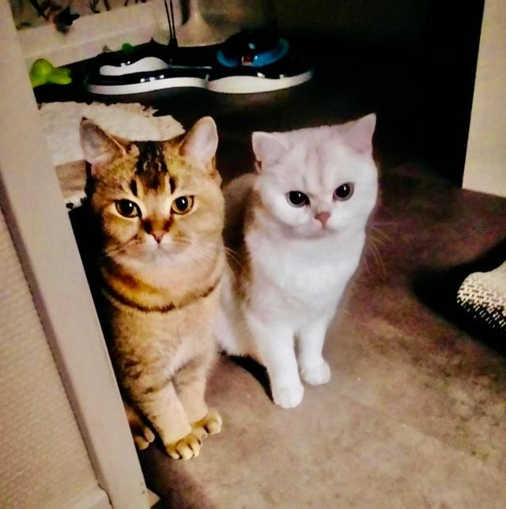
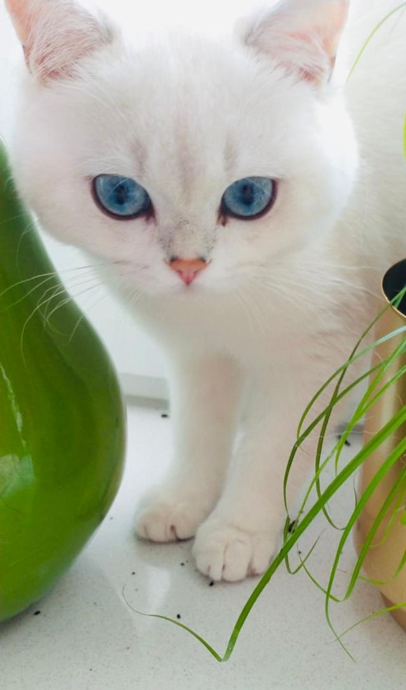
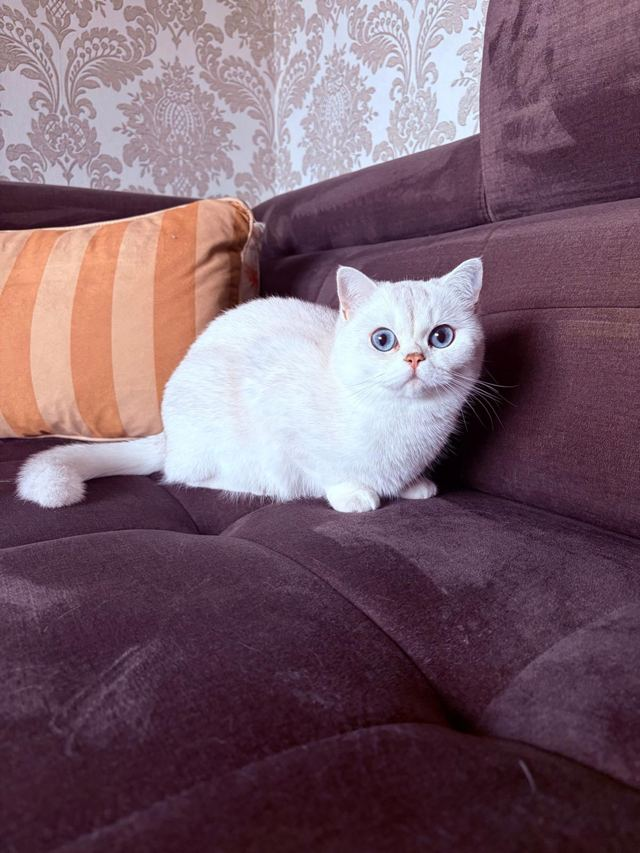
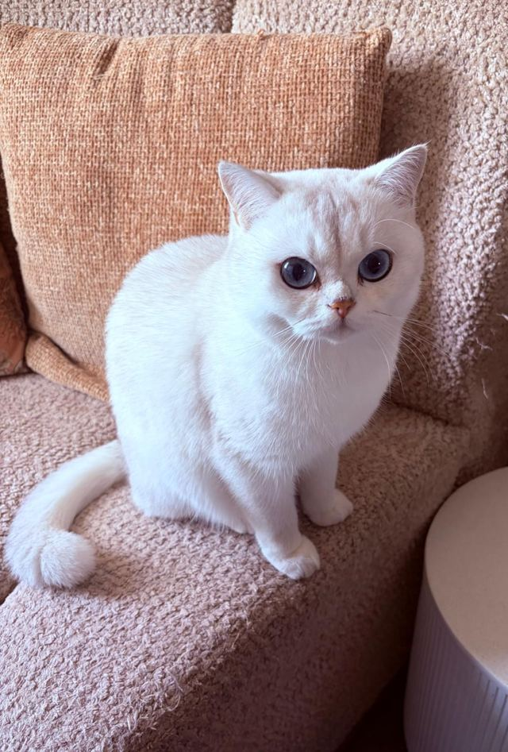
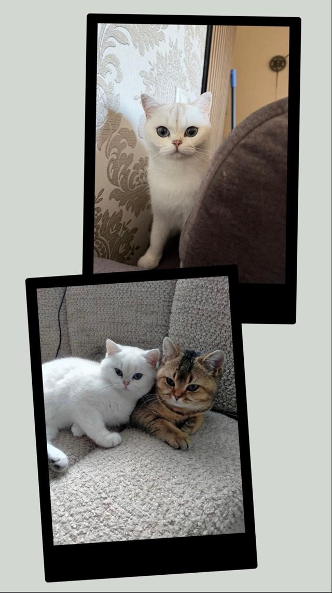